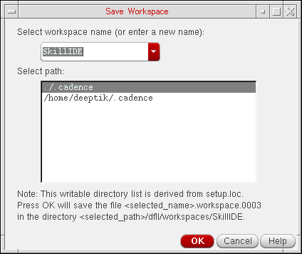

Saving a Workspace
You can customize a workspace by selecting the assistants that you want to display from the Window – Assistants menu. You can then save the customized workspace by doing one of the following:
- Choose Window – Workspaces – Save As.
-
On the Workspace toolbar, select the
option.
The Save Workspace form appears.
In this form, specify the name with which you want to save the workspace and select the path where you want to save the workspace. You can specify a new name or make changes to an existing workspace. Click OK to save the changes you made.
If you do not want to save the changes you made to the existing workspace, choose Windows – Workspaces – Revert to Saved to revert to the factory settings.
Related Topics
Return to top